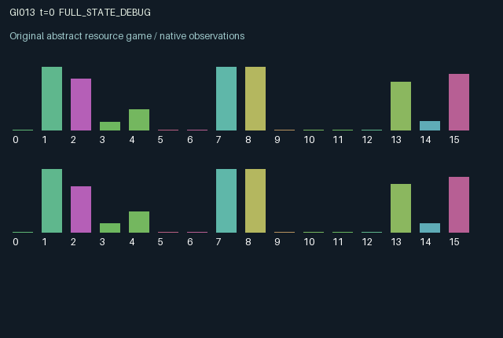

GI013 / LEGACY_ARRAY
astra-d2-00013 — Jointly gated transport of delayed pollution
2 agents5 actions16 observation columns32 original horizonRuntime: PASS
Release verification episode
Untrained uniform legal actions. Actual JAX state sampled along the full original episode; full-state debug camera. No human performance or learning claim.

Run this game
crucibles play --game 13
Start Python locally, then open the address printed by the terminal. Installation, multiplayer, takeover and keyboard controls →
Objective, rewards & ending
Exact task contract
{
"termination": "Original kernel t >= 32; see mechanism and source"
}Declared per-step reward bounds: -1.0 to 1.0. Observability: source_defined.
Rules
Original mechanism document (historical status wording retained)
# astra-d2-00013 — Jointly gated transport of delayed pollution Status: authored source only. Isolated validation and duplicate/mechanism review are pending. ## Causal transition Each agent owns a replenishing water reservoir, persistent contamination, a depletable filter, an outgoing plume, and a persistent gate. Actions are 0 wait, 1 extract, 2 clean local contamination, 3 replenish local filter capacity, and 4 toggle one's gate. Extraction consumes up to 0.35 units of water and creates a plume equal to 0.8 times that volume. The plume reaches a reservoir on the next transition. The current actions first update gates. If both gates are open, each outgoing plume reaches the other reservoir; otherwise both plumes return to their source reservoir. Transport dissipates fifteen percent of each plume. Either role can therefore close the connection, jointly changing the location of both delayed externalities. Restored filter capacity is available to absorb that transition's incoming plume and is consumed by absorption. Unfiltered pollution adds to persistent contamination after natural decay; active cleaning reduces that contamination. Extraction quality then depends on the resulting local contamination. Independent rain replenishes each reservoir after extraction. ## Information Each role knows its own water, contamination, filter, both outgoing plumes, both gates, its last yield, rain, and unfiltered inflow. Public mean water and mean contamination additionally disclose aggregate conditions. The expected incoming-plume feature uses the currently observed gate configuration; simultaneous toggles can change the actual route. There is no hidden agent type, and aggregate water/contamination plus the local value make the corresponding peer value inferable. Peer filter capacity is not directly reported. Observation columns 0–15 are time/32, remaining time/32, local water, local contamination, local filter/0.75, own plume/0.28, peer plume/0.28, own gate, peer gate, last normalized useful yield, last rain/0.11, last unfiltered inflow/0.28, anticipated routed plume/0.28, mean water, mean contamination, and current quality factor. ## Incentives and reward bound Extraction pays 0.6 times normalized usable yield. Yield is extracted volume/0.35 multiplied by a quality factor in [0.15, 1]. Cleaning costs 0.05, restoring filters costs 0.055, and toggling costs 0.01. Actions are exclusive, giving rewards in [-0.055, 0.6]. There is no terminal payment for clean water, remaining filter capacity, or outstanding plumes. The familiar relation is a pollution externality and renewable-resource game. The proposed dependencies combine controllable routing, a shared connection requiring both gates, one-step pollutant transport, and consumable local absorption. This is a mechanism hypothesis rather than evidence of novelty, eligibility, or a learning advantage. ## Interface and provenance Two agents, sixteen float32 observations each, five always-legal actions, and a 32-transition episode. Reset randomizes initial reservoir levels, contamination, and gates. Explicit step keys supply rainfall. This parentless training-context proposal received no parent source, experiment results, or feedback capsule.
Commands
0Action 0; see mechanism and source
1Action 1; see mechanism and source
2Action 2; see mechanism and source
3Action 3; see mechanism and source
4Action 4; see mechanism and source
Roles & abilities
agent_0 Original legacy agent; see mechanism and source
agent_1 Original legacy agent; see mechanism and source
Observation permissions
Training receives only the original observation rows. Role cameras use declared visibility; debug cameras are explicitly marked. Local benchmark records log debug exposure and role takeover history.
Exact observation layout
[]
Entity visibility & attributes
[]
Actual verification & provenance
Per-game execution receipt
{
"game": "gi013",
"status": "PASS",
"verification_revision": 2,
"source_sha256": "a8caa11576d9ad7ec8a1fa6b310f1baeab61f285466f791911241ba5641547cd",
"seed": 20261101,
"runtime": {
"jax": "0.4.38",
"numpy": "1.26.4",
"devices": [
"TFRT_CPU_0"
]
},
"dimensions": {
"num_agents": 2,
"observation_size": 16,
"num_actions": 5,
"max_steps": 32
},
"checks": {
"eager_reset": {
"status": "PASS",
"seconds": 0.8110213279724121
},
"observation_spaces_legal_masks": {
"status": "PASS",
"seconds": 0.13246893882751465
},
"eager_step": {
"status": "PASS",
"seconds": 0.33280014991760254
},
"jit_reset": {
"status": "PASS",
"seconds": 0.3788599967956543
},
"jit_step": {
"status": "PASS",
"seconds": 0.23890447616577148
},
"eager_jit_integer_parity_float_measurement": {
"status": "PASS",
"seconds": 0.0
},
"jit_vmap_reset": {
"status": "PASS",
"seconds": 0.39554309844970703
},
"jit_vmap_step": {
"status": "PASS",
"seconds": 0.2549285888671875
},
"outer_autoreset_api": {
"status": "PASS",
"seconds": 0.7524945735931396
},
"full_original_horizon_episode_and_render": {
"status": "PASS",
"seconds": 1.3399202823638916
}
},
"human_scores": null,
"browser_controls": "PENDING",
"failures": [],
"elapsed_seconds": 5.083188056945801,
"float_parity_max_abs": 5.960464477539063e-08,
"numerical_parity": "UNDETERMINED_NONZERO_FLOAT_DIFFERENCE",
"raw_terminal_absorbing": "NOT_PART_OF_ORIGINAL_LEGACY_CONTRACT",
"terminal_outer_reset": "PASS",
"episode_steps": 32,
"scripted_random_returns": [
0.8320013340562582,
1.5300000924617052
],
"terminal": true,
"demo_information": "FULL_STATE_DEBUG",
"demo_frames": 33,
"render_roles_checked": 2
}Chromium control verification
{
"game": "gi013",
"status": "PASS",
"human_scores": null,
"engineering": true,
"checks": [
"catalog_selected_and_real_native_reset",
"dom_queue_and_native_step",
"second_participant_ownership_and_native_joint_step",
"all_roles_individually_controllable_no_role_cap",
"explicit_debug_camera",
"release_to_pure_ai_without_reset"
],
"ui_sha256": "15b5861d23b3c42811865c954d5a988280bbfd21cf8e93754be2437a027158c5",
"seconds": 2.8920352458953857
}Original identity and file hashes
{
"id": 13,
"key": "gi013",
"title": "astra-d2-00013 — Jointly gated transport of delayed pollution",
"summary": "",
"tags": [],
"family": "legacy_array",
"dimensions": {
"num_agents": 2,
"observation_size": 16,
"num_actions": 5,
"max_steps": 32
},
"source_sha256": "a8caa11576d9ad7ec8a1fa6b310f1baeab61f285466f791911241ba5641547cd",
"manifest_sha256": "71f3174da6d881cb6cbcfee3ba55425b154ba48df2597b361d0728b86f4b04e8",
"files": [
{
"file": "candidate.py",
"sha256": "a8caa11576d9ad7ec8a1fa6b310f1baeab61f285466f791911241ba5641547cd",
"bytes": 4276,
"origin": "work/exp_2/astra_generation/discovery_v2/initial/candidate_00013/attempt_00/candidate.py"
},
{
"file": "mechanism.md",
"sha256": "acb0c62ac7d37d200a1646440a0b5edea80d865da1d7fb0a436ecda6dd4e60b6",
"bytes": 3247,
"origin": "work/exp_2/astra_generation/discovery_v2/initial/candidate_00013/attempt_00/mechanism.md"
}
],
"original_status": "LEGACY_SOURCE",
"original_saved_replay": false,
"release_validation": "PASS",
"human_scores": null,
"browser_validation": "PASS"
}